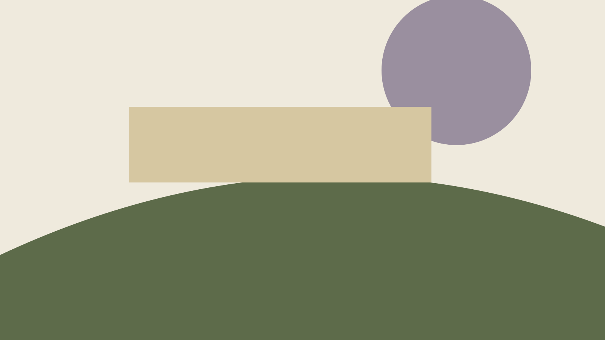
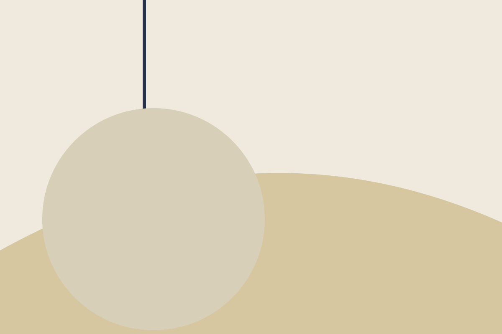
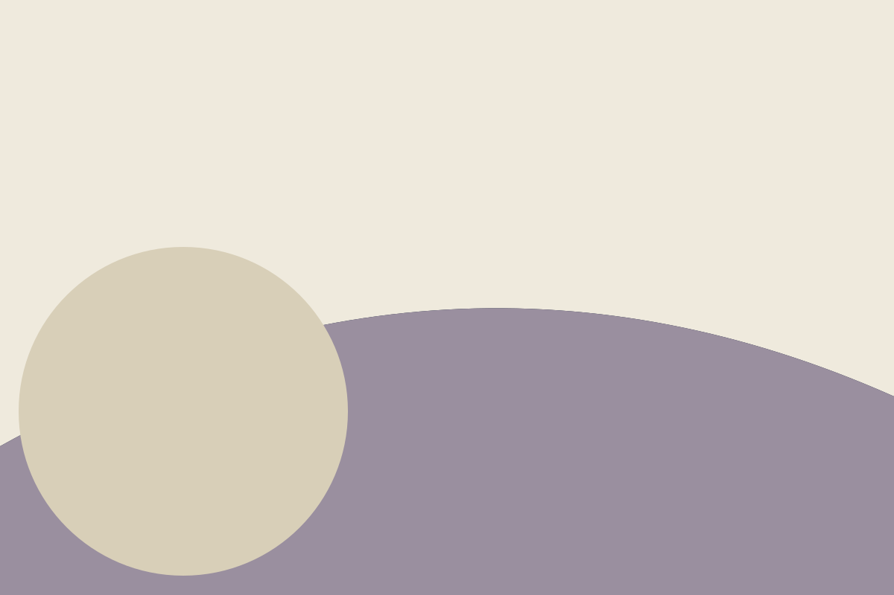
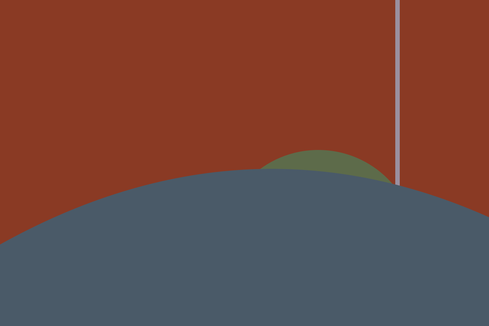

Edit 09
Slate Water, the ninth edit
A quiet edit of coats, knits and table things from an invented house, drawn in the grey-blue of a harbour under cloud.
The collections
Seven groups across the house line and the Field line. This is a catalogue to browse, not a shop.
From the journal

Making
A coat drawn in three afternoons
The Quayside Overcoat began as a paper pattern pinned to the wall of the Fennimere studio. The first afternoon was spent on the collar alone: how high it should stand, and whether it should fold without being asked.

Materials
Notes from the Tarn Hollow weaving shed
Tarn Hollow Mill is an invented place. In this story it sits beside a reservoir that nobody has ever drawn on a map, and its looms are loud enough that visitors learn to read lips.

Collections
Slate Water: colour notes
Edit 09 is built around a colour we call slate water: the grey-blue of a harbour under cloud. We paired it with oat, tar and a single rust accent.
See it in person (imaginary)
Eight invented places carry the house and its Field line. Their addresses, hours and phone numbers are sample data.
Looking for the shop?
The original reference sells online. This replica has no cart, no checkout, no account and no prices, by design.